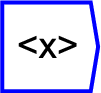

Next: Median
Up: Statistical Operations
Previous: Statistical Operations
Contents

The operator can be placed on the canvas in two ways:
- From the Statistics (``statistics'') toolbar
 ;
or
;
or
- By typing the letters ``mean'' on the canvas and then pressing the
Enter key
Returns the mean (or average) along a named dimension of all elements
present. If the dimension is not named, then the mean is over all
elements present in the tensor. Note that missing elements are not
counted.